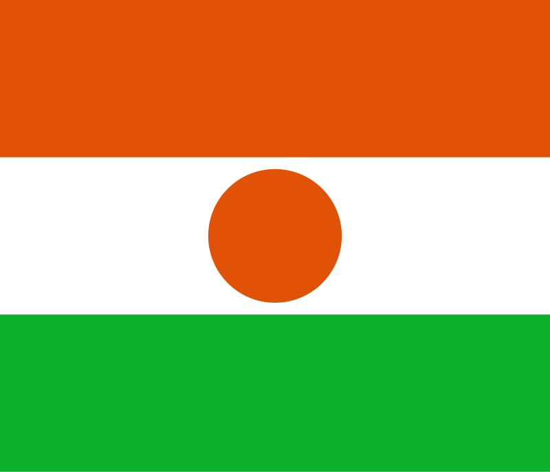

Níger
 O Níger, oficialmente República do Níger, é um país localizado na África Ocidental, fazendo fronteira com Líbia, Chade, Nigéria, Benim, Burkina Faso, Mali e Argélia. Com cerca de 1,27 milhão de km², é um dos maiores países da África em extensão territorial. A capital é Niamey, situada na região sudoeste do país, ao longo do rio Níger. A população é composta por diversos grupos étnicos, incluindo hausa, zarma, tuaregues, fulanis e kanuris, cada um preservando suas línguas e tradições culturais. Historicamente, o Níger teve grande influência de impérios africanos, como o Songhai e Mali, além da colonização francesa, que perdurou até a independência em 1960. Atualmente, o Níger é membro da ONU, União Africana, CEDEAO e da Organização Internacional da Francofonia, e sua economia depende principalmente da agricultura, mineração de urânio e comércio transfronteiriço.
História
A história do Níger é marcada pela presença de grandes impérios africanos, migrações de povos nômades e colonização europeia. Povos indígenas, como os tuaregues e fulanis, habitaram o território há séculos, desenvolvendo culturas e tradições próprias. Entre os séculos XV e XVI, a região fez parte do Império Songhai, um dos maiores impérios africanos, antes de ser influenciada pelos reinos do Mali e Hausalândia.
No final do século XIX, o território foi incorporado à colônia francesa da África Ocidental, sendo sujeito a administrações coloniais e exploração econômica. Movimentos nacionalistas surgiram no século XX, culminando na independência do país em 3 de agosto de 1960. Desde então, o Níger passou por diversos períodos de instabilidade política, mas mantém um processo gradual de democratização e fortalecimento das instituições.
Cultura
A cultura do Níger é diversificada, refletindo a pluralidade étnica do país. As tradições dos hausa, zarma, tuaregues, fulanis e kanuris são preservadas na música, dança, vestuário e artesanato. A música tradicional, como o xalam e o tuareg guitar, desempenha papel central em festivais e celebrações.
A religião predominante é o islã, que molda costumes, vida social e festividades, como o Ramadã e o Eid. As línguas oficiais incluem o francês, mas as línguas locais, como hausa, zarma e tamajeq, são amplamente faladas. A gastronomia é baseada em cereais, legumes e carnes, refletindo influências africanas e islâmicas. A literatura oral, contos e poesia desempenham papel importante na preservação da memória cultural, enquanto o artesanato inclui tecidos, cestos e joias tradicionais.


Clima
O Níger apresenta clima predominantemente desértico no norte, com altas temperaturas durante o dia e noites frias, enquanto a região sul possui clima semiárido, com chuvas concentradas entre junho e setembro. O país enfrenta secas recorrentes e escassez de água, fatores que influenciam diretamente a agricultura, a economia rural e a vida das comunidades locais.
Biodiversidade
Apesar do clima árido, o Níger possui biodiversidade significativa em regiões fluviais e savanas do sul. Animais como antílopes, leões, crocodilos, hipopótamos e aves migratórias habitam áreas protegidas como o Parque Nacional do Termit e do Tin-Toumma. O país também abriga espécies adaptadas ao deserto, como répteis e pequenos mamíferos, que sobrevivem em ambientes extremos.
O Níger mantém esforços de conservação por meio de parques nacionais e reservas, buscando equilibrar proteção ambiental com necessidades econômicas e sociais, promovendo turismo sustentável e preservação da fauna e flora nativas.

Cidades
As cidades do Níger refletem a diversidade cultural e a distribuição geográfica do país. Niamey, a capital, é o principal centro administrativo, político e econômico, localizada às margens do rio Níger, com infraestrutura urbana em desenvolvimento. Outras cidades importantes incluem Zinder, Maradi, Tahoua e Agadez, centros regionais que combinam patrimônio histórico, comércio e funções administrativas. Essas cidades são fundamentais para o desenvolvimento econômico, social e cultural do país, conectando áreas rurais a polos urbanos.